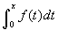
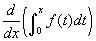
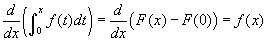
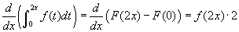
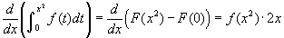
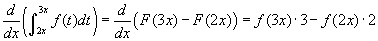

This device cannot display Java animations. The above is a substitute static image
1. A line
The applet shows the graph of
- f (t) on the left

in the center

on the right.
In the applet, the term
a(
x) represents the lower limit (and is 0 in this example), while
b(
x) represents the upper limit (and is
x in this example). Move the
x slider and notice what happens to the left hand graph. As you change
x,
b changes (since it depends on
x). The area is shown colored in (green for positive area, red for negative).
The middle graph, of the accumulation function, then just graphs x versus the area (i.e., y is the area colored in the left graph). The middle graph also includes a tangent line at x and displays the slope of this line.
The right hand graph plots this slope versus x and hence is the derivative of the accumulation function. Note that this graph looks just like the left hand graph, except that the variable is x instead of t. So you can find the derivative of an accumulation function by just replacing the variable in the integrand, as noted in the Second Fundamental Theorem of Calculus, above.
Another way to think about this is to derive it using the
Fundamental Theorem we saw earlier. If the antiderivative of f (x) is F (x), then

F (0) disappears because it is a constant, and the derivative of a constant is zero.
2. A sine curve
Select the second example from the drop down menu, showing sin(t) as the integrand. Move the x slider and note the area, that the middle graph plots this area versus x, and that the right hand graph plots the slope of the middle graph. Again, the right hand graph is the same as the left.
3. A line with different b
Select the third example. This goes back to the line on the left, but now the upper limit is 2x. Clearly the right hand graph no longer looks exactly like the left hand graph. What's going on? Move the x slider and notice what happens to b. Since the upper limit is not just x but 2x, b changes twice as fast as x, and more area gets shaded. Hence the middle parabola is steeper, and therefore the derivative is a line with steeper slope.
How much steeper? We can use the derivation methodology from the first example to handle this case:

Here the variable
t in the integrand gets replaced with 2
x, but there is an additional factor of 2 that comes from the chain rule when we take the derivative of
F (2
x). When evaluating the derivative of accumulation functions where the upper limit is not just a simple variable, we have to do a little more work.
4. Line with yet another b
Select the fourth example. This uses the line and x² as the upper limit. Move the x slider and notice that b always stays positive, as you would expect due to the x². We can evaluate this case as follows:

Again, we substitute the upper limit
x² for
t in the integrand, and multiple (because of the chain rule) by 2
x (which is the derivative of
x² ).
5. Line with a different a
Select the fifth example. Now the lower limit has changed, too. Move the x slider and note that both a and b change as x changes. Again, we can handle this case:

In this example, the lower limit is not a constant, so we wind up with two copies of the integrand in our result, subtracted from each other. The first copy has the upper limit substituted for
t and is multiplied by the derivative of the upper limit (due to the chain rule), and the second copy has the lower limit substituted for
t and is also multiplied by the derivative of the lower limit.
Other 'Constructing Antiderivatives' topics
(C) 2011 Copyright Math Open Reference.
All rights reserved